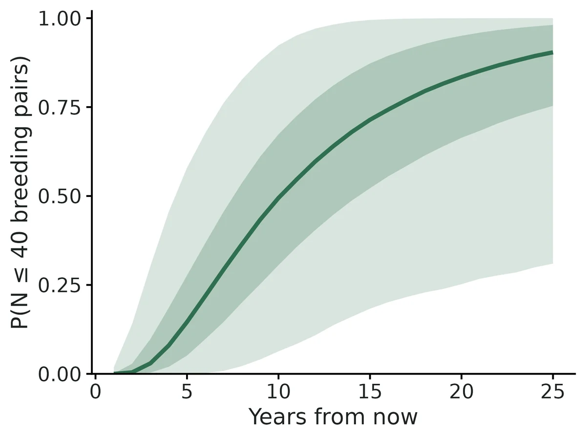
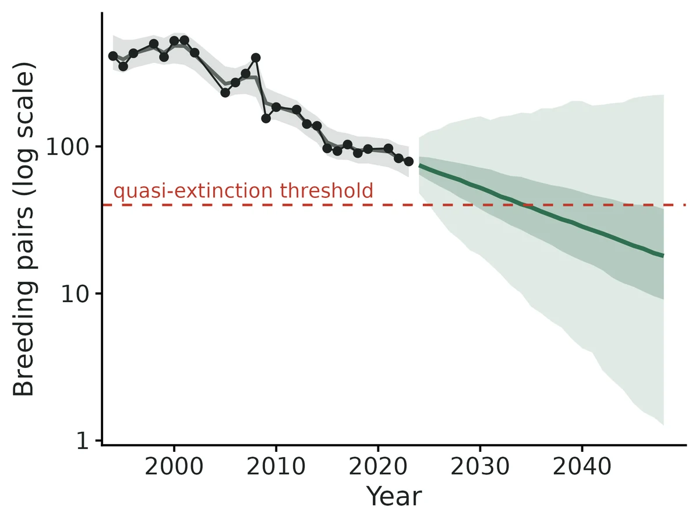
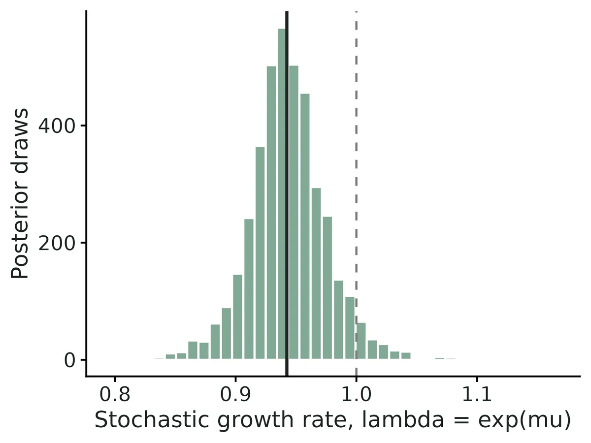
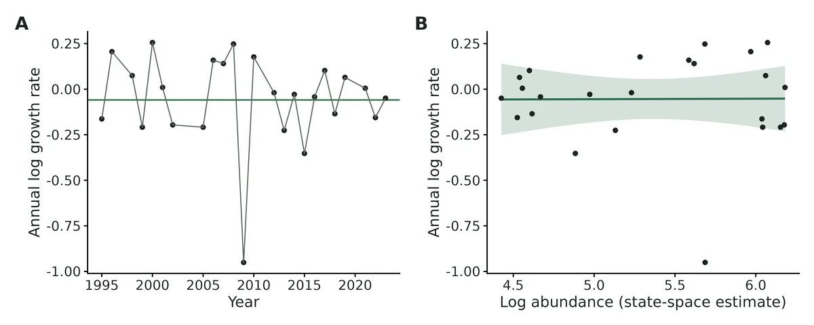

Population viability analysis - count-based (diffusion / state-space) and matrix-model PVA
"How likely is this population to drop to a level we would consider functionally extinct (the quasi-extinction threshold) within the next 10, 25 or 50 years; how fast is it growing or declining in the long run; and which vital rates, or which management actions, would most reduce the risk?"
Is this the right analysis?
Use it when
The question is extinction or quasi-extinction RISK - "how likely is this population to fall below N animals within 10, 25 or 50 years, and which vital rates or management actions change that?" Use the count model when you have one count or index per year (10+ years, ideally 20+). Use the matrix model when you have stage- or age-specific vital rates (survival, fecundity) with standard errors and year-to-year variation, e.g. from a CJS, IPM or nest-monitoring analysis, or raw annual monitoring counts of animals at risk and survivors / young produced.
Not for
Estimating trend, density dependence or covariate effects on growth from counts (use timeseries, which this module complements); estimating survival from capture histories (cjs / multistate / ipm first, then feed their estimates here); spatially explicit or metapopulation PVA (not supported); fewer than ~10 counts (risk is unestimable); populations with strong density dependence near carrying capacity in the count model (see Pitfalls).
The data you need
Count model - CSV with one row per year (year, count; blank = not surveyed). matrix model - a matrix definition (stages, entries as formulas in named vital rates) in the config plus EITHER a vital-rate CSV (rate, type, mean, se, sd_env, n_years) OR an annual monitoring CSV (year, rate, n, events); initial abundance per stage; a quasi-extinction threshold..
What the example's main data file looks like:
| survey_year | breeding_pairs | observer_notes |
|---|---|---|
| 1994 | 412 | |
| 1995 | 350 | |
| 1996 | 430 | |
| 1997 | no survey | |
| 1998 | 499 |
Not sure? Use the finder to compare modules.
The worked example
Shorebird breeding-pair survey: count-based state-space PVA with counting error and missing years (simulated)
The question: Is the shorebird population really declining, and how likely is it to fall to 40 breeding pairs or fewer within 10 and 25 years?
The data are simulated, so the true answer is known and the analysis can be checked against it.
What the researcher typed
I have 30 years of spring counts of breeding pairs for a shorebird (shorebird_breeding_pairs.csv; blank = no survey). The counts are surveys, so they're not exact. Please tell me whether the population is declining and how likely it is to drop to 40 breeding pairs or fewer within 10 and 25 years. I don't code, so please do the analysis and give me a report and figures I can use.
Run it yourself
Download the example data below and unzip it.
Open the unzipped folder in Claude Code (see Install).
Paste the prompt above. The agent checks the files, writes a plan, runs planted truth, fits the model and writes the report. You can compare your results with the ones below.
Contains shorebird_breeding_pairs.csv, the settings file (config_state_space.yaml), a description of the data and a step-by-step walkthrough.
Study design details
| model | count |
|---|---|
| method | state_space |
| years spanned | 30 |
| years surveyed | 25 |
| years missing | 1997, 2003, 2004, 2011, 2020 |
| first year | 1994 |
| N0 | 420 |
| threshold | 40 |
| horizons | 10, 25 |
Results from the example data

In plain language
- the population was not clearly increasing or decreasing: the long-run (median) growth rate is lambda = 0.942 per year (95% CI 0.879 to 1.013), i.e. a typical change of -5.8% per year (95% CI -12.1% to +1.3%).
- Year-to-year variability in the log growth rate (process variance sigma^2) is 0.0188 (95% CI 0.0030 to 0.0971).
- Counting (observation) error variance on the log scale is 0.0256 (95% CI 0.0003 to 0.0727), equivalent to a coefficient of variation of roughly 16% in a single count. The model's estimate of the true current abundance is 79 breeding pairs (95% CI 61 to 100).
- Probability that the population falls to or below the quasi-extinction threshold of 40 breeding pairs in at least one annual census within 10 years: 49% (95% CI 6% to 92%); 25 years: 90% (95% CI 31% to >99.9%).
- Forecasts beyond about 20% of the monitoring span (here 6 years) are known to be very imprecise (Fieberg & Ellner 2000); use them to compare options, not as absolute predictions.
More figures



Figures are the module's default publication figures, reduced for the web. The report also saves them as PDF and full-resolution PNG.
Planted truth at the example's design
Before trusting the example's results, the module was run on many simulated data sets with the same design and known true values. Each row is one quantity: did the method get it back? (What the thresholds are.)
What OPEN means here. The module works (it passes at its default design), but at this example's design not every quantity passed the planted-truth check, so CascadiaTools does not certify those. 6 of the 7 quantities checked passed outright. For p qext 10yr, the estimate was biased (by up to 47%); don't interpret those at this design. The quantities that passed can be used as reported. With your own data, the report would say the same and suggest what would help: more data, a simpler model or a different estimator. More on DONE and OPEN.
Why, for this example:
Growth, variances and current abundance pass planted truth and the fit is healthy, but the quasi-extinction point estimate (a primary estimand) fails the mean-bias gate at 10 years (Known limit 1); intervals are calibrated (coverage 0.985), so risk is reported as an interval only.
6 of 7 rows pass.
| Quantity | True value | Average estimate | Bias | Coverage | Result |
|---|---|---|---|---|---|
| growth_rate_mu | -0.04 | -0.0415 | -3.8% | 0.97 | ✓ PASS |
| lambda_stochastic | 0.961 | 0.96 | -0.1% | 0.97 | ✓ PASS |
| N_current | 149.5 | 150.2 | +0.4% | 0.94 | ✓ PASS |
| obs_variance_tau2 | 0.03 | 0.0288 | -4.1% | 0.97 | ✓ PASS |
| p_qext_10yr | 0.162 | 0.238 | +2229.7% | 0.98 | ✗ FAIL |
| p_qext_25yr | 0.463 | 0.492 | -10.3% | 0.98 | ✓ PASS |
| process_variance_sigma2 | 0.012 | 0.014 | +16.5% | 0.98 | ✓ PASS |
Limits that matter
- Quasi-extinction point estimates are median-unbiased but too extreme on average and fail the mean-bias gate; quote the interval (Known limit 1).
- Risk horizons beyond ~20% of the data span (here ~6 yr) give intervals spanning most of 0-1 (Fieberg & Ellner 2000).
- Low power: a true 3.9%/yr decline at this design is detected (CI for mu excludes 0) in only 22.5% of simulated data sets.
- Counting-error variance can be biased low (-18%) when counting error exceeds process noise in short gappy series (here -4%).
- Density dependence, autocorrelated environments, catastrophes and trends are not tested by recovery.
All known limits from the module's validation record
Point estimates of quasi-extinction probability fail the mean-bias gate at every design.
- They are median-unbiased and rank risk correctly, but they are too extreme: high risks are overstated and very low risks understated.
- Their intervals are calibrated (coverage 0.895-1.00).
- Treat risk as an interval and use it to compare scenarios; never quote the point as a forecast.
- Beyond about 20% of the data span, intervals typically cover most of 0-1 (Fieberg & Ellner 2000; Ellner & Holmes 2008).
- Short series (12 years of counts): risk-interval coverage falls to 0.895-0.915, just under the 0.904 bound at 10-25 yr.
- Short matrix monitoring (8 years): under-coverage of adult survival (0.895), and the fecundity environmental SD is biased low (-16%).
Stochastic lambda intervals in the matrix model are conservative.
- Coverage is 1.00 at the default design (0.985 at the short one), and the false-positive rate is 0/200.
- The SE inflation by t(0.975, years-1)/1.96 plus propagation of environmental-variance uncertainty makes them wider than necessary.
- Power to detect lambda != 1 is therefore lower than nominal.
- Observation-error variance is biased low (-18%) when counting error exceeds process noise in short series with gaps.
Assumptions not tested by recovery, because the simulator obeys the model:
- density dependence in the count model (Sabo et al. 2004);
- autocorrelated environments;
- catastrophes and trends in vital rates;
- imperfect detection in raw monitoring data (option B assumes detection = 1; use cjs first).
- Matrix recovery uses known-fate monitoring data (option B input). Option A (vital-rate table with SEs) is checked only through the popbio cross-checks and the example.
- The diffusion model treats the last count as the true current abundance (N_current has no uncertainty), as in Dennis et al. (1991). Use
state_spacewhen counts are surveys.
Engine, references and full details
Engine: hand-written R - Dennis et al. diffusion estimators and inverse-Gaussian first-passage risk with a discrete-census correction; Bayesian exponential-growth state-space (EGSS) model computed exactly on a grid over the REML likelihood (no MCMC); vectorised stochastic matrix projection with demographic and environmental stochasticity and parameter uncertainty. popbio, MARSS and a Nimble MCMC of the same state-space model used as independent cross-checks..
References
- Broadie M, Glasserman P, Kou SG (1997) A continuity correction for discrete barrier options. Mathematical Finance 7:325-349.
- Caswell H (2001) Matrix Population Models, 2nd ed. Sinauer.
- Dennis B, Munholland PL, Scott JM (1991) Estimation of growth and extinction parameters for endangered species. Ecological Monographs 61:115-143.
- Dennis B, Ponciano JM, Lele SR, Taper ML, Staples DF (2006) Estimating density dependence, process noise, and observation error. Ecological Monographs 76:323-341.
- Ellner SP, Holmes EE (2008) Resolving the debate on when extinction risk is predictable. Ecology Letters 11:E1-E5.
- Fieberg J, Ellner SP (2000) When is it meaningful to estimate an extinction probability? Ecology 81:2040-2047.
- Holmes EE (2001) Estimating risks in declining populations with poor data. PNAS 98:5072-5077.
- Holmes EE (2004) Beyond theory to application and evaluation: diffusion approximations for population viability analysis. Ecological Applications 14:1272-1293.
- Humbert J-Y, Mills LS, Horne JS, Dennis B (2009) A better way to estimate population trends. Oikos 118:1940-1946.
- Kendall BE (1998) Estimating the magnitude of environmental stochasticity in survivorship data. Ecological Applications 8:184-193.
- Ludwig D (1999) Is it meaningful to estimate a probability of extinction? Ecology 80:298-310.
- Morris WF, Doak DF (2002) Quantitative Conservation Biology: Theory and Practice of Population Viability Analysis. Sinauer.
- Sabo JL, Holmes EE, Kareiva P (2004) Efficacy of simple viability models in ecological risk assessment: does density dependence matter? Ecology 85:328-341.
- Staples DF, Taper ML, Dennis B (2004) Estimating population trend and process variation for PVA in the presence of sampling error. Ecology 85:923-929.
- Stubben CJ, Milligan BG (2007) Estimating and analyzing demographic models using the popbio package in R. Journal of Statistical Software 22(11).
- Tuljapurkar S (1990) Population Dynamics in Variable Environments. Springer.
- Gelman A (2006) Prior distributions for variance parameters in hierarchical models. Bayesian Analysis 1:515-533.
- Harville DA (1974) Bayesian inference for variance components using only error contrasts. Biometrika 61:383-385.
- Eberhardt LL, Knight RR, Blanchard BM (1986) Monitoring grizzly bear population trends. Journal of Wildlife Management 50:613-618 (grizzly example data, via Morris & Doak 2002 Table 3.1 and popbio::grizzly).